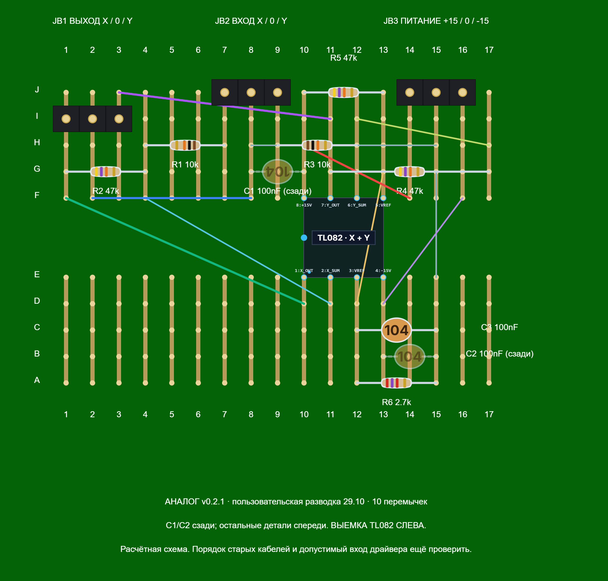
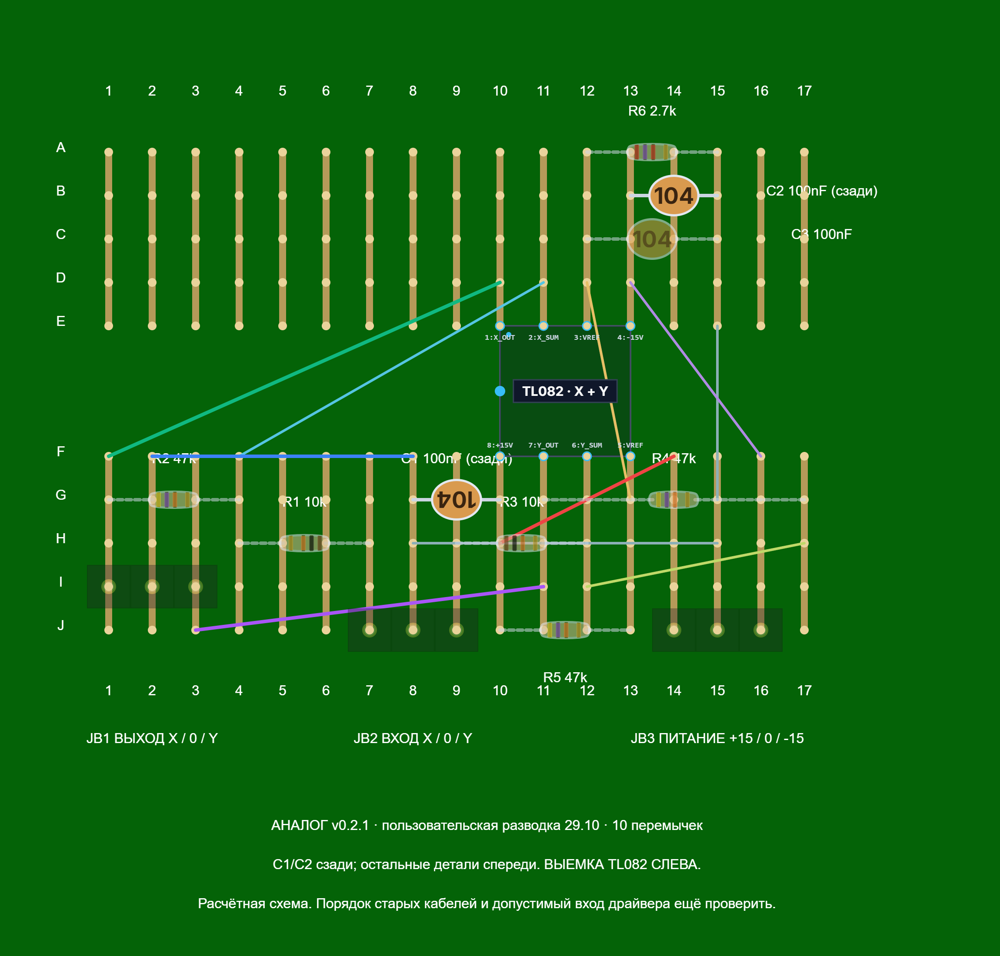

SHOOTOOM / ŠŪTUM · OWNER'S WORKING GUIDE · UPDATED 31 OCTOBER 2026
Hardware & Firmware Guide
One entry point for the controller board, analog amplifier, panel cables, firmware and current assembly notes. The board files remain separate because they describe two physically separate PCBs.
1. Encoder and NeoPixel cables
Use the MAIN board, not the TL082 board. Look at the component bodies: XIAO on the left with USB pointing left, AHCT245 in the middle, MCP4822 on the right. In this view A is at the top, J at the bottom; columns 1…30 run left to right. The white connector latch / split-wall side points down towards the J edge, matching the owner's description.
Connector references and holes are different names: J4 is the encoder connector, while J5 is also the name of its leftmost board hole. J5 is the NeoPixel connector reference, but its holes are J19…J21.
J4 · five-pin encoder · left to right
| Board connector | Board hole | Connect to encoder label | Board route |
|---|---|---|---|
| J4.1 | J5 | CLK | D4 / GPIO5 |
| J4.2 | J6 | DT | D5 / GPIO6 |
| J4.3 | J7 | SW | D6 / GPIO43 |
| J4.4 | J8 | GND | Common ground |
| J4.5 | J9 | + / VCC | 3.3 V from XIAO |
The cable order is CLK — DT — SW — GND — +3.3 V. SW is the push-button contact (sometimes misread as SV). CLK and DT are the two rotation channels. Use the actual labels on the encoder module; the physical order on that module need not match the order on our board.
J5 · three-pin NeoPixel · left to right
| Board connector | Board hole | Connect to ring label | Board route |
|---|---|---|---|
| J5.1 | J19 | GND | Common ground |
| J5.2 | J20 | IN / DIN | D7 / GPIO44 → AHCT245 → R3 330 Ω |
| J5.3 | J21 | VCC / + | 5 V rail |
The cable order is GND — DIN — +5 V. Connect to the ring's IN/DIN side, not OUT/DOUT. Ring data already passes through the AHCT245 and the existing R3 330 Ω on the main board. Do not add another resistor just because the cable is being assembled.
Before applying power
Disconnect external power and USB before re-pinning cables. With each cable plugged into the unpowered board, confirm continuity from the label on the peripheral to the relevant board strip. For accessible test pads use F5/CLK, F6/DT, F7/SW, F8/GND, F9/3.3 V and G19/GND, G20/DIN, G21/5 V. These pads share factory copper with the connector holes; do not push probes into occupied solder joints.
Reversing the way you look at a detached cable plug reverses apparent left/right. The small arrows/holes in the plastic do not prove electrical polarity. Trace the wires by continuity, not colour. This guide's drawing always shows the installed connector on the component face.
Firmware 0.1.5: the same controls in all three programs. Short click cycles the menu; turn edits the selected value; hold 1.2 seconds and release to play/pause/resume; hold 3.5 seconds and release to save. The ring uses GRB, initially 12 pixels. See operation below.
2. Main controller board · v0.8.4
Open main board in editor Detailed assembly guide
Main board solder / printed face · J top, A bottom

Flip top-to-bottom around a horizontal axis to get the other face; left/right columns stay fixed under this specific flip. Do not transfer the row orientation from the amplifier board by memory.
| Connector | Board contacts in order | Function |
|---|---|---|
| J1 | Upper: GND; lower: +5 V | Regulated low-voltage input, column 3 |
| J3 | Upper: GND; lower: +5 V | Fan supply, column 17 |
| J2 | A24: +5 V; A25: switched laser return | Two-wire laser module |
| J7 | A20: Gate; A21: Drain; A22: Source/GND | External MOSFET cable; not a universal transistor pinout |
| J6 | A27: DAC A/X; A28: GND; A29: DAC B/Y | Signal cable to analog JB2 |
Main board parts already in the design
XIAO ESP32-S3 Plus; AHCT245 DIP20; MCP4822 DIP8; R1 1 kΩ (laser gate series), R2 10 kΩ (control pull-down), R3 330 Ω (ring data series), R4 10 kΩ (external MOSFET gate-to-source); C1/C2 100 nF ceramic supply decoupling; D1 Schottky supply diode (owner fitted 1N5819). The diode's band faces B1 / XIAO 5V. The MOSFET is outside this board; its physical lead order must match its own part, not the connector's project labels.
Complete main-board pin / passive list from the checked model
| Part / pin | Hole | Net |
|---|---|---|
| U2.1 | F10 | +5V |
| U2.11 | E19 | NC |
| U2.2 | F11 | SCK_3V3 |
| U2.12 | E18 | NC |
| U2.3 | F12 | MOSI_3V3 |
| U2.13 | E17 | LASER_5V |
| U2.4 | F13 | CS_3V3 |
| U2.14 | E16 | LED_5V |
| U2.5 | F14 | LDAC_3V3 |
| U2.15 | E15 | LDAC_5V |
| U2.6 | F15 | LED_3V3 |
| U2.16 | E14 | CS_5V |
| U2.7 | F16 | LASER_3V3 |
| U2.17 | E13 | MOSI_5V |
| U2.8 | F17 | GND |
| U2.18 | E12 | SCK_5V |
| U2.9 | F18 | GND |
| U2.19 | E11 | GND |
| U2.10 | F19 | GND |
| U2.20 | E10 | +5V |
| U3.1 | F27 | +5V |
| U3.5 | E30 | LDAC_5V |
| U3.2 | F28 | CS_5V |
| U3.6 | E29 | DAC_B |
| U3.3 | F29 | SCK_5V |
| U3.7 | E28 | GND |
| U3.4 | F30 | MOSI_5V |
| U3.8 | E27 | DAC_A |
| U1.5V | D1 | XIAO_5V |
| U1.GND | D2 | GND |
| U1.3V3 | D3 | +3V3 |
| U1.D10 | D4 | MOSI_3V3 |
| U1.D9 | D5 | NC |
| U1.D8 | D6 | SCK_3V3 |
| U1.D7 | D7 | LED_3V3 |
| U1.D0 | H1 | LASER_3V3 |
| U1.D1 | H2 | CS_3V3 |
| U1.D2 | H3 | NC |
| U1.D3 | H4 | LDAC_3V3 |
| U1.D4 | H5 | ENC_A |
| U1.D5 | H6 | ENC_B |
| U1.D6 | H7 | ENC_SW |
| J1.1 | BOTTOM GND 3 | GND |
| J1.2 | BOTTOM +5V 3 | +5V |
| J3.1 | BOTTOM GND 17 | GND |
| J3.2 | BOTTOM +5V 17 | +5V |
| J4.1 | J5 | ENC_A |
| J4.2 | J6 | ENC_B |
| J4.3 | J7 | ENC_SW |
| J4.4 | J8 | GND |
| J4.5 | J9 | +3V3 |
| J5.1 | J19 | GND |
| J5.2 | J20 | LED_DATA |
| J5.3 | J21 | +5V |
| J7.1 | A20 | GATE |
| J7.2 | A21 | LASER_RETURN |
| J7.3 | A22 | GND |
| J6.1 | A27 | DAC_A |
| J6.2 | A28 | GND |
| J6.3 | A29 | DAC_B |
| J2.1 | A24 | +5V |
| J2.2 | A25 | LASER_RETURN |
| R1.1 | D17 | LASER_5V |
| R1.2 | D20 | GATE |
| R2.1 | J1 | LASER_3V3 |
| R2.2 | TOP GND 4 | GND |
| R3.1 | C16 | LED_5V |
| R3.2 | C23 | LED_DATA |
| C1.1 | C10 | +5V |
| C1.2 | C11 | GND |
| C2.1 | G27 | +5V |
| C2.2 | G26 | GND |
| D1.1 | BOTTOM +5V 1 | +5V |
| D1.2 | B1 | XIAO_5V |
| R4.1 | E20 | GATE |
| R4.2 | E22 | GND |
All 29 main-board jumpers from the checked model
TOP/BOTTOM in rail endpoint names are legacy model IDs, not a change to the face orientation stated above. Use the board picture and named holes when locating physical pads.
| Wire | Net | From | To |
|---|---|---|---|
| W01 | GND | LEFT GND LINK UP | LEFT GND LINK DOWN |
| W02 | +5V | RIGHT +5V LINK UP | RIGHT +5V LINK DOWN |
| W03 | +5V | J27 | TOP +5V 27 |
| W04 | GND | TOP GND 26 | J26 |
| W05 | +5V | TOP +5V 10 | J10 |
| W06 | +5V | A10 | BOTTOM +5V 10 |
| W07 | GND | I8 | TOP GND 8 |
| W08 | SCK_3V3 | E6 | G11 |
| W09 | LED_3V3 | E7 | G15 |
| W10 | GND | A2 | BOTTOM GND 2 |
| W11 | GND | BOTTOM GND 11 | A11 |
| W12 | LASER_3V3 | I1 | I16 |
| W13 | GND | B22 | BOTTOM GND 22 |
| W14 | +5V | B24 | BOTTOM +5V 24 |
| W15 | GND | B28 | BOTTOM GND 28 |
| W16 | GND | G17 | G19 |
| W17 | GND | H18 | H17 |
| W18 | GND | TOP GND 17 | I17 |
| W19 | +5V | TOP +5V 21 | I21 |
| W20 | MOSI_3V3 | E4 | H12 |
| W21 | CS_3V3 | G2 | J13 |
| W22 | LDAC_3V3 | G4 | J14 |
| W23 | +3V3 | E3 | G9 |
| W24 | CS_5V | D14 | J28 |
| W25 | SCK_5V | B12 | J29 |
| W26 | MOSI_5V | B13 | J30 |
| W27 | LDAC_5V | B15 | B30 |
| W28 | LASER_RETURN | D21 | D25 |
| W29 | LED_DATA | F20 | E23 |
3. Separate analog board · one TL082
Open reviewed owner layout Detailed analog guide17 columns, 1…17 left to right. Printed/component face: J at the TOP, A at the BOTTOM. Each column's J…F five pads are connected; E…A form a separate connected group. The gap is between F and E. TL082 notch points left.

Analog solder face

| Analog connector | Hole | Signal |
|---|---|---|
| JB1.1 | I1 | X_OUT |
| JB1.2 | I2 | GND |
| JB1.3 | I3 | Y_OUT |
| JB2.1 | J7 | X_IN |
| JB2.2 | J8 | GND |
| JB2.3 | J9 | Y_IN |
| JB3.1 | J14 | +15V |
| JB3.2 | J15 | GND |
| JB3.3 | J16 | -15V |
Main A27 → analog J7, main A28 → analog J8, main A29 → analog J9: DAC A/X, common ground, DAC B/Y. These are the design correspondences. The owner skipped the last requested cable continuity check before connecting and reported working output; do not record that skipped check as passed.
Analog parts: R1/R3 10 kΩ; R2/R4/R5 47 kΩ; R6 nominal 2.7 kΩ. Actual R6: 2.2 kΩ + 470 Ω in series (2.67 kΩ nominal, about 2.66 kΩ measured), with the owner's isolated intermediate node in column 17. C1/C2/C3 are 100 nF ceramic. That is six resistor references, but seven physical resistors with the R6 pair.
Electrical topology
Each channel is an inverting amplifier: DAC input → 10 kΩ → inverting input; output → 47 kΩ feedback → inverting input. Both non-inverting inputs share VREF. VREF comes from +15 V through 47 kΩ, then R6 to 0 V. Nominal gain magnitude is 4.7, so Vout = 5.7 × VREF − 4.7 × VDAC. This is a fixed-resistor adaptation of the reference, not a claim that the burned old module had identical wiring.
Analog circuit drawing · nominal R6 2.7 kΩ

The existing schematic retains Russian labels and nominal R6; use the series-pair note above for the as-built value.
Owner-reported measurements: F10 +15 V, E13 −15 V relative to A15; VREF F13 +0.79 V; open signal-input outputs E10/F11 about +0.80 V. Main DAC at idle about 1.02 V on each output. These are individual observations, not a measured full-range calibration. The earlier burned/cracked TL082 incident remains in the repository; its exact cause was not established.
4. Signal and power chain
Embedded show data → XIAO ESP32-S3 Plus SPI + paired LDAC → AHCT245 (5 V supply) → MCP4822 MCP4822 A/B + GND → main J6 → analog JB2 TL082 (±15 V supply) → analog JB1 → existing XY galvo driver GPIO1 / D0 → AHCT245 → R1 → external MOSFET Gate 5 V → laser module → MOSFET Drain; Source → common GND Encoder CLK/DT/SW → XIAO GPIO5/6/43 (3.3 V logic) XIAO GPIO44 → AHCT245 → R3 330 Ω → ring DIN 5 V rail → ring VCC and fan; 3.3 V → encoder supply
The 5 V logic supply and the bipolar ±15 V amplifier supply are different rails. Their common signal reference is 0 V/GND; −15 V is not GND. Main J6 carries signal and ground only; it does not supply the amplifier. This guide does not specify or approve the internal 230 V mains wiring.
MCP4822 is driven at gain 1× in the current sketch: its nominal 12-bit range is 0…approximately 2.048 V, not 0…5 V despite its 5 V supply. Neither those voltage endpoints nor software clipping establish acceptable galvo travel.
5. Autonomous firmware · 0.1.5
New candidate; no hardware upload or optical test by the agent. Open this version in Arduino IDE: XIAO ESP32-S3 Plus, USB CDC On Boot Enabled. Upload yourself.
firmware/esp32-s3/0.1.5/ShootoomS3/ShootoomS3.ino
One set of controls everywhere
| Gesture | Result in every program, running or paused |
|---|---|
| Short click and release | Next menu field; playback position retained |
| Turn | Edit that field live |
| Hold 1.2–3.5 s, release | Play / pause / resume |
| Hold at least 3.5 s, release | Save current settings + default program; preserve playing/paused state |
To start or pause: hold about two seconds, then release. Holding beyond 3.5 seconds saves instead. These thresholds are unchanged; the cause of the reported unreliable start has not been established.
Button-down blanks and suspends playback. Actions happen on release, so a long Save hold cannot first trigger Play. There is no separate settings mode and no automatic save. A short click on a fault acknowledges it and stays paused.
| Menu colour, in order | Setting |
|---|---|
| White | Three adjacent markers: Show / Stone / Frame + F |
| Blue | Scale 5…100%, 1 percentage point per detent |
| Purple | Eight adjacent swap/reflection variants |
| Cyan | Angular rotation 0°, 45° … 315°, one 45° step per detent; eight adjacent cyan markers |
| Pink | Drawing speed 25…400%, steps of 25 percentage points |
| Amber | 0…60 seconds between cycles of this program |
| Green | Autorun: positive turn = all green / ON; negative = one green / OFF |
The final LED is green while playing/waiting for repeat, amber while paused. Other LEDs show the current field; the Autorun field uses the whole ring. White flash confirms save; red blinking indicates a software fault. Exact values are available in USB status.
Programs and live settings
Show: symbols, lettering and scripted pauses only; no stone contour at startup or at cycle repeats. Stone: only the stone outline, repeated. Frame + F: full digital square with the large F retained as an orientation mark. Separate small square/F modes are removed. Frame has no old 200 ms parking pause or calibration timeout; relocations between strokes are dark.
Scale/orientation/rotation/speed are shared. Each program has its own gap: initially Show 10 s, Stone 0 s, Frame 0 s. Gap 0 now means continuous repeat. Speed changes drawing/movement timing, including lettering, but not scripted scene pauses. Geometry changes blank and realign at the preceding vertex; pausing does not reset Show.
At angle 0°, scale 1.0, the frame spans codes 1…4095, as before. The eight rotation positions fit the square inside the same digital canvas: at 45°, requested scale 1.0 applies about 0.707 to avoid clipping corners; at 0°/90° it applies 1.0. status shows both scales. This new angular fitting does not explain size observations made on earlier firmware.
Save and exhibition startup
- Select the desired startup program on white and adjust its settings.
- On green, turn positive for all green / autorun ON.
- Hold at least 3.5 s until white, then release to save.
- Next power-up: five-second amber countdown, then the saved program. Show starts immediately with symbols.
Press/turn cancels the countdown; holding the button at power-on suppresses it. Set one green / OFF and save to disable future autorun. Saving writes NVS only while blanked and preserves playback state. Without saving, changes are RAM-only. On first import of an older profile, scale resets to 1.0 and angle to 0°; orientation and other settings are retained. After you save a 0.1.5 profile, your chosen scale/angle are restored normally. Old diagnostic selections from version-1 profiles still migrate to Frame with autorun OFF.
USB monitor and size investigation
Serial Monitor: 115200 / Newline. status, monitor on/off, diag. The last command gives commanded lit DAC coordinate bounds and nominal calculated voltage spans; it cannot measure actual analog voltage, light output or galvo position.
For USB playback send, separately: stop, select stone, arm, stone within ten seconds. Use show or frame for other programs. pause preserves position; arm then resume resumes. stop / ! deliberately reset. Live commands: scale, orient, angle, speed, gap, boot auto/manual, save. Wi-Fi/Bluetooth are not enabled.
DAC gain remains 1×, matching the preserved Uno receiver. The present 47k/10k analog ratio is 4.7×; nominal full DAC span is 2.0475 Vpp, hence calculated analog span 9.623 Vpp. This is not a physical measurement or evidence of the old amplifier gain. The cause of the reported smaller projection remains unresolved until the current profile and a comparable Stone width are supplied.
Full instructions: firmware/esp32-s3/0.1.5/README.md; evidence: firmware/esp32-s3/0.1.5/BUILD.md; size investigation: hardware/PROJECTION_SIZE_2026-10-30.md.
6. Feet and tripod attachment
3M SJ5017 adhesive feet on Amazon.de: listing found for 40 pieces, Ø19 mm × 9.6 mm high. The actual dimensions are also stated by 3M. Use four feet on clean, flat areas near the corners. Adhesion to this enclosure material has not been tested. The accessed Amazon session was set to the United States, so German delivery date and final price were not verified.
SmallRig 4486 HawkLock / Arca kit on Amazon.de: a compact candidate with two 1/4-20 screws on the top plate and a removable clamp. Listed kit dimensions are 54.6 × 41 × 23 mm; this is the complete kit, not the thickness of the top plate. The lower clamp can remain on the tripod. The clamp also has two underside 1/4-20 holes 18 mm apart. Current price and German delivery were not verified.
Two fasteners through the housing into a suitable internal backing plate or wide washers are the proposed anti-rotation attachment. Check body dimensions, clearances and the actual plate screw spacing before drilling; fastener length and enclosure load capacity are not established. Keep all internal hardware clear of wiring and boards. The complete mount arrangement depends on the existing tripod head, which has not been identified.
Feet must extend below the plate left on the housing. A 9.6 mm foot is not enough to clear the whole 23 mm kit. Do not choose the feet solely by the catalog height without deciding which plate parts remain on the case.
7. Files, evidence and status
Run Start Board Viewer.cmd from the repository root to open this guide and start the local viewer if needed. The separate board editors use the same viewer. This guide does not edit browser local storage or overwrite board projects.
- Main source: v0.8.4 JSON; checked physical pin/net map.
- Analog source: reviewed owner JSON; connections CSV; jumper CSV.
- Firmware instructions:
firmware/esp32-s3/0.1.5/README.md; evidence:firmware/esp32-s3/0.1.5/BUILD.md. - Actual measurements and incident history:
hardware/ANALOG_BRINGUP_2026-10-29.mdandhardware/INCIDENT_2026-10-27_TL082.md. - Current encoder/LED connector tables are generated from the v0.8.4 checked pin map; fixed assertions check the expected holes and nets. Model verification is distinct from physical cable testing.
Primary component references: Seeed XIAO S3/Plus · ESP32 3.3.7 XIAO pin aliases (D4/5/6/7 = GPIO5/6/43/44) · TI AHCT245 · Microchip MCP4822 · UTC TL082 · original build reference.